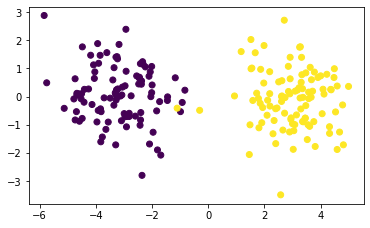

\(\newcommand{\horz}{\rule[.5ex]{2.5ex}{0.5pt}}\)
3.5. Advanced material#
We cover various advances topics.
3.5.1. Some proofs from spectral theory#
In this section, we give a proof of the spectral theorem, as well as proofs of a few other related results.
We start with a proof that distinct eigenvalues correspond to linearly independent eigenvectors.
Proof: (Number of Eigenvalues) Assume by contradiction that \(\mathbf{x}_1, \ldots, \mathbf{x}_m\) are linearly dependent. By the Linear Dependence Lemma, there is \(k \leq m\) such that
where \(\mathbf{x}_1, \ldots, \mathbf{x}_{k-1}\) are linearly independent. In particular, there are \(a_1, \ldots, a_{k-1}\) such that
Transform the equation above in two ways: (1) multiply both sides by \(\lambda_k\) and (2) apply \(A\). Then subtract the resulting equations. That leads to
Because the \(\lambda_i\)’s are distinct and \(\mathbf{x}_1, \ldots, \mathbf{x}_{k-1}\) are linearly independent, we must have \(a_1 = \cdots = a_{k-1} = 0\). But that implies that \(\mathbf{x}_k = \mathbf{0}\), a contradiction.
For the second claim, if there were more than \(d\) distinct eigenvalues, then there would be more than \(d\) corresponding linearly independent eigenvectors by the first claim, a contradiction. \(\square\)
One might hope that the SVD of a symmetric matrix generates identical left and right singular vectors, thereby producing candidates for the sought eigenvectors. However that is not the case.
EXAMPLE: It can be shown that an SVD of \(A = (-1)\) is \(A = (1)\,(1)\,(-1)\). That is, \(\mathbf{u}_1 = (1)\) and \(\mathbf{v} = (-1)\). \(\lhd\)
However, the same roadmap that led to the SVD can be made to produce a spectral decomposition.
We will need the following block matrix formula. Suppose
where \(A_{11} \in \mathbb{R}^{n_1\times p}\), \(A_{21} \in \mathbb{R}^{n_2\times p}\), \(B_{11} \in \mathbb{R}^{p\times n_1}\), \(B_{12} \in \mathbb{R}^{p\times n_2}\), then
Indeed this is just a special case of the \(2 \times 2\) block matrix product formula we have encountered previously, with empty blocks \(A_{12}, A_{22}, B_{21}, B_{22}\).
Proof idea (Spectral Theorem): Similarly to how we used Householder transformations to “add zeros under the diagonal”, here we will use a sequence of orthogonal transformations to add zeros both below and above the diagonal. Specifically, we construct a sequence of orthogonal matrices \(\hat{W}_1,\ldots, \hat{W}_d\) such that
is diagonal. Then the matrix \(Q\) is simply \(W_1 W_2 \cdots W_d\) (check it!).
To define these matrices, we use a greedy sequence maximizing the quadratic form \(\langle \mathbf{v}, A \mathbf{v}\rangle\). How is this quadratic form related to eigenvalues? Note that, for a unit eigenvector \(\mathbf{v}\) with eigenvalue \(\lambda\), we have \(\langle \mathbf{v}, A \mathbf{v}\rangle = \langle \mathbf{v}, \lambda \mathbf{v}\rangle = \lambda\).
Proof: (Spectral Theorem) We proceed by induction.
A first eigenvector Let \(A_1 = A\). Define
which exists by the Extreme Value Theorem, and further define
Complete \(\mathbf{v}_1\) into an orthonormal basis of \(\mathbb{R}^d\), \(\mathbf{v}_1\), \(\hat{\mathbf{v}}_2, \ldots, \hat{\mathbf{v}}_d\) (see Exercise 2.20), and form the block matrix
where the columns of \(\hat{V}_1\) are \(\hat{\mathbf{v}}_2, \ldots, \hat{\mathbf{v}}_d\). Note that \(\hat{W}_1\) is orthogonal by construction.
Getting one step closer to diagonalization We show next that \(W_1\) gets us one step closer to a diagonal matrix by similarity transformation. Note first that
where \(\mathbf{w}_1 = \hat{V}_1^T A_1 \mathbf{v}_1\) and \(A_2 = \hat{V}_1^T A_1 \hat{V}_1\).
The key claim is that \(\mathbf{w}_1 = \mathbf{0}\). This follows from a contradiction argument. Indeed, suppose \(\mathbf{w}_1 \neq \mathbf{0}\) and consider the unit vector (Exercise 3.65 asks for a proof that \(\|\mathbf{z}\| = 1\))
which, by the formula in Exercise 2.52, achieves the objective value
By the sum of a geometric series, for \(\varepsilon \in (0,1)\),
So, for \(\delta > 0\) small enough,
where \(C \in \mathbb{R}\) depends on \(\mathbf{w}_1\) and \(A_2\), and where we ignored the “higher-order” terms involving \(\delta^3, \delta^4, \delta^5, \ldots\) which are negligible. That gives the desired contradiction - that is, it would imply the existence of a vector achieving a stricter better objective value than the optimal \(\mathbf{v}_1\). (See Exercise 3.65 for a more formal derivation.)
So, letting \(W_1 = \hat{W}_1\),
Finally note that \(A_2 = \hat{V}_1^T A_1 \hat{V}_1\) is symmetric
by the symmetry of \(A_1\) itself.
Next step of the induction Apply the same argument to the symmetric matrix \(A_2 \in \mathbb{R}^{(d-1)\times (d-1)}\), let \(\hat{W}_2 = (\mathbf{v}_2\ \hat{V}_2) \in \mathbb{R}^{(d-1)\times (d-1)}\) be the corresponding orthogonal matrix, and define \(\lambda_2\) and \(A_3\) through the equation
Now define the block matrix
Observe that (check it!)
Proceeding similarly by induction gives the claim. \(\square\)
Remarks: A couple remarks about the proof:
(1) The fact that \(\mathbf{w}_1 \neq \mathbf{0}\) is perhaps more intuitively understood through vector calculus by using the method of Lagrangian multipliers on \(\max\{\langle \mathbf{v}, A_1 \mathbf{v}\rangle:\|\mathbf{v}\| = 1\}\) to see that \(A_1 \mathbf{v}_1\) must be proportional to \(\mathbf{v}_1\). Hence \(\mathbf{w}_1 = \hat{V}_1^T A_1 \mathbf{v}_1 = \mathbf{0}\) by construction of \(\hat{V}_1^T\). Making this argument rigorous is beyond this course.
(2) By construction, the vector \(\mathbf{v}_2\) (i.e., the first column of \(\hat{W}_2\)) is the solution to
Note that, by definition of \(A_2\) (and the fact that \(A_1 = A\)),
So we can think of the solution \(\mathbf{v}_2\) as specifying an optimal linear combination of the columns of \(\hat{V}_1\) - which form a basis of the space \(\mathrm{span}(\mathbf{v}_1)^\perp\) of vectors orthogonal to \(\mathbf{v}_1\). In essence \(\mathbf{v}_2\) solves the same problem as \(\mathbf{v}_1\), but restricted to \(\mathrm{span}(\mathbf{v}_1)^\perp\). We will come back to this below.
3.5.2. Proof of Greedy Finds Best Subspace#
In this section, we prove the Greedy Finds Best Subspace Theorem.
Proof idea: We proceed by induction. For an arbitrary orthonormal list \(\mathbf{w}_1,\ldots,\mathbf{w}_k\), we find an orthonormal basis of their span containing an element orthogonal to \(\mathbf{v}_1,\ldots,\mathbf{v}_{k-1}\). Then we use the defintion of \(\mathbf{v}_k\) to conclude.
Proof: As we explained in the previous subsection, we reformulate the problem as a maximization
where we also replace the \(k\)-dimensional linear subspace \(\mathcal{Z}\) with an arbitrary orthonormal basis \(\{\mathbf{w}_1,\ldots,\mathbf{w}_k\}\).
We then proceed by induction. For \(k=1\), we define \(\mathbf{v}_1\) as a solution of the above maximization problem. Assume that, for any orthonormal list \(\{\mathbf{w}_1,\ldots,\mathbf{w}_\ell\}\) with \(\ell < k\), we have
Now consider any orthonormal list \(\{\mathbf{w}_1,\ldots,\mathbf{w}_k\}\) and let its span be \(\mathcal{W} = \mathrm{span}(\mathbf{w}_1,\ldots,\mathbf{w}_k)\).
Step 1. For \(j=1,\ldots,k-1\), let \(\mathbf{v}_j'\) be the orthogonal projection of \(\mathbf{v}_j\) onto \(\mathcal{W}\) and let \(\mathcal{V}' = \mathrm{span}(\mathbf{v}'_1,\ldots,\mathbf{v}'_{k-1})\). Because \(\mathcal{V}' \subseteq \mathcal{W}\) has dimension at most \(k-1\) while \(\mathcal{W}\) itself has dimension \(k\), by Exercises 2.33 and 2.34 we can find an orthonormal basis \(\mathbf{w}'_1,\ldots,\mathbf{w}'_{k}\) of \(\mathcal{W}\) such that \(\mathbf{w}'_k\) is orthogonal to \(\mathcal{V}'\). Then, for any \(j=1,\ldots,k-1\), we have the decomposition \(\mathbf{v}_j = \mathbf{v}'_j + (\mathbf{v}_j - \mathbf{v}'_j)\) where \(\mathbf{v}'_j \in \mathcal{V}'\) is orthogonal to \(\mathbf{w}'_k\) and \(\mathbf{v}_j - \mathbf{v}'_j\) is also orthogonal to \(\mathbf{w}'_k \in \mathcal{W}\) by the properties of the orthogonal projection onto \(\mathcal{W}\). Hence
for any \(\beta_j\)’s. That is, \(\mathbf{w}'_k\) is orthogonal to \(\mathrm{span}(\mathbf{v}_1,\ldots,\mathbf{v}_{k-1})\).
Step 2. By the induction hypothesis, we have
Moreover, recalling that the \(\boldsymbol{\alpha}_i^T\)’s are the rows of \(A\),
since the \(\mathbf{w}_j\)’s and \(\mathbf{w}'_j\)’s form an orthonormal basis of the same subspace \(\mathcal{W}\). Since \(\mathbf{w}'_k\) is orthogonal to \(\mathrm{span}(\mathbf{v}_1,\ldots,\mathbf{v}_{k-1})\) by the conclusion of Step 1, by the definition of \(\mathbf{v}_k\) as a solution to
we have
Step 3. Putting everything together
which proves the claim. \(\square\)
3.5.3. Proof of existence of the SVD#
We return to the proof of the Existence of SVD Theorem. Recall the construction of left and right singular vectors detailed above. All that is left to prove is the orthogonality of the \(\mathbf{u}_j\)’s.
LEMMA (Left Singular Vectors are Orthogonal) For all \(1 \leq i \neq j \leq r\), \(\langle \mathbf{u}_i, \mathbf{u}_j \rangle = 0\). \(\flat\)
Proof idea: Quoting [BHK, Section 3.6]:
Intuitively if \(\mathbf{u}_i\) and \(\mathbf{u}_j\), \(i < j\), were not orthogonal, one would suspect that the right singular vector \(\mathbf{v}_j\) had a component of \(\mathbf{v}_i\) which would contradict that \(\mathbf{v}_i\) and \(\mathbf{v}_j\) were orthogonal. Let \(i\) be the smallest integer such that \(\mathbf{u}_i\) is not orthogonal to all other \(\mathbf{u}_j\). Then to prove that \(\mathbf{u}_i\) and \(\mathbf{u}_j\) are orthogonal, we add a small component of \(\mathbf{v}_j\) to \(\mathbf{v}_i\), normalize the result to be a unit vector \(\mathbf{v}'_i \propto \mathbf{v}_i + \varepsilon \mathbf{v}_j\) and show that \(\|A \mathbf{v}'_i\| > \|A \mathbf{v}_i\|\), a contradiction.
Proof: We argue by contradiction. Let \(i\) be the smallest index such that there is a \(j > i\) with \(\langle \mathbf{u}_i, \mathbf{u}_j \rangle = \delta \neq 0\). Assume \(\delta > 0\) (otherwise use \(-\mathbf{u}_i\)). For \(\varepsilon \in (0,1)\), because the \(\mathbf{v}_k\)’s are orthonormal, \(\|\mathbf{v}_i + \varepsilon \mathbf{v}_j\|^2 = 1+\varepsilon^2\). Consider the vectors
Observe that \(\mathbf{v}'_i\) is orthogonal to \(\mathbf{v}_1,\ldots,\mathbf{v}_{i-1}\), so that
On the other hand, by the Orthogonal Decomposition Lemma, we can write \(A \mathbf{v}_i'\) as a sum of its orthogonal projection on the unit vector \(\mathbf{u}_i\) and \(A \mathbf{v}_i' - \mathrm{proj}_{\mathbf{u}_i}(A \mathbf{v}_i')\), which is orthogonal to \(\mathbf{u}_i\). In particular, by Pythagoras, \(\|A \mathbf{v}_i'\| \geq \|\mathrm{proj}_{\mathbf{u}_i}(A \mathbf{v}_i')\|\). But that implies, for \(\varepsilon \in (0,1)\),
where the second inequality follows from a Taylor expansion or the observation
Now note that
for \(\varepsilon\) small enough, contradicting the inequality above. \(\square\)
3.5.4. Computing more singular vectors#
We have shown how to compute the first singular vector. How do we compute more singular vectors? One approach is to first compute \(\mathbf{v}_1\) (or \(-\mathbf{v}_1\)), then find a vector \(\mathbf{y}\) orthogonal to it, and proceed as above. And then we repeat until we have all \(m\) right singular vectors.
We are often interested only in the top, say \(\ell < m\), singular vectors. An alternative approach in that case is to start with \(\ell\) random vectors and, first, find an orthonormal basis for the space they span. Then to quote [BHK, Section 3.7.1]:
Then compute \(B\) times each of the basis vectors, and find an orthonormal basis for the space spanned by the resulting vectors. Intuitively, one has applied \(B\) to a subspace rather than a single vector. One repeatedly applies \(B\) to the subspace, calculating an orthonormal basis after each application to prevent the subspace collapsing to the one dimensional subspace spanned by the first singular vector.
We will not prove here that this approach, known as orthogonal iteration, works. The proof is similar to that of the Power Iteration Lemma.
NUMERICAL CORNER: We implement this last algorithm. We will need our previous implementation of Gram-Schimdt.
def svd(A, l, maxiter=100):
V = rng.normal(0,1,(np.size(A,1),l))
for _ in range(maxiter):
W = A @ V
Z = A.T @ W
V, R = mmids.gramschmidt(Z)
W = A @ V
S = [LA.norm(W[:, i]) for i in range(np.size(W,1))]
U = np.stack([W[:,i]/S[i] for i in range(np.size(W,1))],axis=-1)
return U, S, V
Note that above we avoided forming the matrix \(A^T A\). With a small number of iterations, that approach potentially requires fewer arithmetic operations overall and it allows to take advantage of the possible sparsity of \(A\) (i.e. the fact that it may have many zeros).
We apply it again to our two-cluster example.
d, n, w = 1000, 100, 3.
X1, X2 = mmids.two_clusters(d, n, w)
X = np.concatenate((X1, X2), axis=0)
Let’s try again, but after projecting on the top two singular vectors. Recall that this corresponds to finding the best two-dimensional approximating subspace. The projection can be computed using the truncated SVD \(Z= U_{(2)} \Sigma_{(2)} V_{(2)}^T\). We can interpret the rows of \(U_{(2)} \Sigma_{(2)}\) as the coefficients of each data point in the basis \(\mathbf{v}_1,\mathbf{v}_2\). We will work in that basis.
U, S, V = svd(X, 2)
Xproj = np.stack((U[:,0]*S[0], U[:,1]*S[1]), axis=-1)
assign = mmids.kmeans(Xproj, 2)
4852.714299912972
2455.3342669438193
2453.3018578718893
2453.3018578718893
2453.3018578718893
2453.3018578718893
2453.3018578718893
2453.3018578718893
2453.3018578718893
2453.3018578718893
fig = plt.figure()
ax = fig.add_subplot(111,aspect='equal')
ax.scatter(X[:,0], X[:,1], c=assign)
plt.show()

Finally, looking at the first two right singular vectors, we see that the first one does align quite well with the first dimension.
print(np.stack((V[:,0], V[:,1]), axis=-1))
[[-0.78532229 0.01276602]
[ 0.02628204 -0.00697769]
[-0.04267928 0.02063803]
...
[ 0.00846189 -0.01257502]
[ 0.01411465 0.06385812]
[ 0.00299769 0.06254379]]
\(\unlhd\)